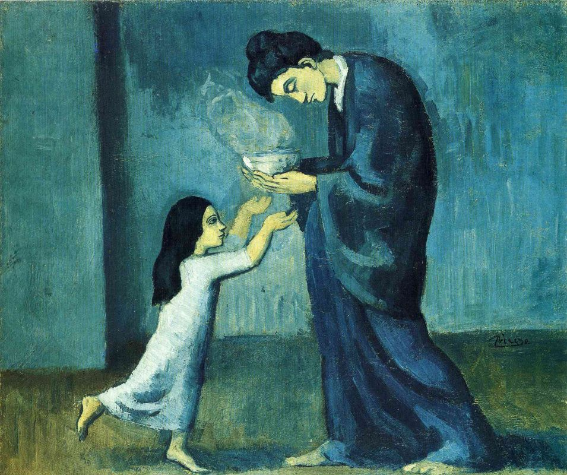
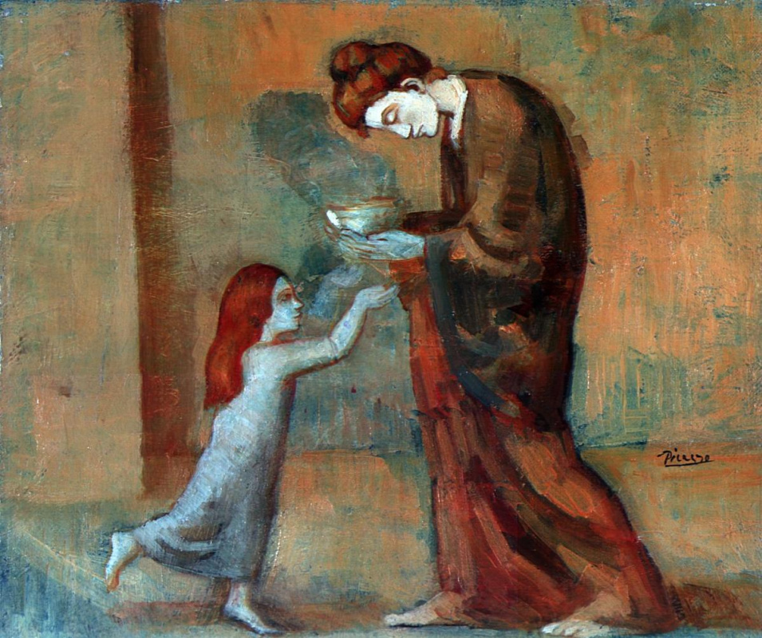

Скрытые секреты обнаружили исследователи на картинах Пикассо
Реставраторы из Художественной галереи Онтарио завершили трёхлетнее исследование картины «Суп» Пабло Пикассо из коллекции учреждения. Оно не только пролило свет на многочисленные вопросы, давно волновавшие учёных, но и выявило значительные изменения в композиции, углубив познания о «голубом периоде» художника с 1901 по 1904 годы.

Жанровая сцена «Суп» была подарена Художественной галерее Онтарио в 1983 году. На ней изображён ребёнок, который тянется к миске в руках у согнувшейся женщины. Вся работа выполнена преимущественно оттенками синего, белого и коричневого цветов. И, как показал анализ, Пикассо внёс существенные изменения в первоначальную композицию.
«Давно стало ясно, что под толстым текстурированным красочным слоем „Супа“ есть секреты, — говорит старший консерватор галереи Сандра Вебстер-Кук. — По рентгеновским снимкам и даже при внимательном изучении невооружённым глазом видно, что перед написанием этой картины художник счистил другую. Но что именно находилось под поверхностью, было тайной. Благодаря сложной обработке изображений и анализу, мы выяснили это».
Учёные увидели под верхним слоем очертания прогнувшейся назад женщины, расположенной между двух главных фигур на видимой картине. Пикассо заретушировал эту фигуру, а затем использовал её контуры, выписывая героинь финальной композиции. Также она частично скрыта за паром, поднимающимся над миской. Образ этой женщины соотносится с несколькими рисунками и картинами, которые Пикассо выполнил в Барселоне в 1902 году. Это дало учёным лучшее понимание того, как «Суп» связан с другими произведениями «голубого периода».
При сканировании были выявлены и другие изменения в композиции картины. Модификации касаются, в частности, руки женщины, держащей миску, а также положения головы и ноги ребёнка. Кроме того, под верхним слоем — в пространстве между героинями — обнаружен керамический кувшин. Все эти редакции связаны с подготовительными рисунками и картинами, которые Пикассо создал примерно в то же время, что и «Суп».
Информация, полученная в результате этих исследований, будет представлена на выставке, посвящённой «голубому периоду» в творчестве Пикассо. Её в 2020 — 2021 годах планируют организовать Художественная галерея Онтарио совместно с Собранием Филлипса из Вашингтона.
Автор: Влад Маслов15 АВГУСТА